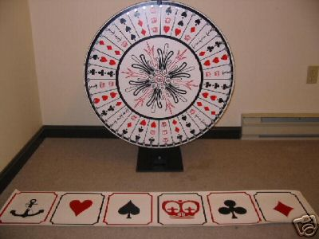

Home Page
F.A.Qs
Statistical Charts
Past Contests
Scheduled Contests
Award Contest
| Online Judge | Problem Set | Authors | Online Contests | User | ||||||
|---|---|---|---|---|---|---|---|---|---|---|
| Web Board Home Page F.A.Qs Statistical Charts | Current Contest Past Contests Scheduled Contests Award Contest | |||||||||
|
Language: Up the Ante
Description Every summer, Stan and Ollie attend the Ex together. Stan likes to play Crown & Anchor, a gambling game in which one bets on one of: Crown, Anchor, Club, Diamond, Heart, Spade. A wheel is spun and stops in a position marked by three of the above symbols (not necessarily distinct). If Stan has bet on one of the three symbols indicated, he receives his bet back plus n times his bet, where n is the number of times that his symbol appears.
Every year, Stan loses money and Ollie ridicules him for it. This year, Stan has made a side bet with Ollie: that he can make money playing Crown & Anchor. Ollie is not stupid and realizes that Stan might be lucky and win the first few rounds, so he insists that, to win the bet, Stan must be ahead after at least k rounds. Also, so that the issue may be resolved before the Ex closes, to win Stan must show a profit within at most m rounds. Stan has a trick up his sleeve. He has recently learned of the Monte Carlo strategy for betting. The idea is that he first places the minimum bet. If he wins, he collects his winnings and once again places the minimum bet. If he loses, he doubles his bet so that if he wins the next round, he will win enough to recoup his previous losses and make a profit. This doubling continues until he wins. Whenever he wins, he pockets the profit and starts over with the minimum bet. Stan thinks this is a great strategy but the establishment thought of it first and implemented a house limit - the maximum bet that Stan can place in any given round. (Even without a house limit there's a de facto Stan limit - the amount of money he has with him. But we'll assume he has enough money that this limit isn't an issue.) Stan modifies his strategy so that if doubling his bet would exceed the house limit, he starts over at the minimum bet, hoping to recover his loss. Stan wins the bet if, following this strategy, his net winnings are positive at any time after playing k and before playing the m+1st round. What's the probability that Stan will win the bet? Input The first line of input contains n, the number of test cases. Each test case is represented by a line containing integers k, m, and l, the minimum number of rounds, the maximum number of rounds, and the house limit. 0 < k < m ≤ 30; 2 ≤ l ≤ 1000. The minimum bet is 1. Output For each test case, print the probability that Stan will win the bet, rounded to 4 decimal places.
The design of the wheel can be seen in the illustration. It has 28 possible stopping positions, only 14 different combinations of symbols, each of which appears twice. The 14 combinations include: 6 that contain three identical symbols; 6 that contain two identical symbols, and 2 that contain three distinct symbols. The patterns are designed so that each symbol appears once, twice, and three times in an equal number of wheel positions. Sample Input 1 3 4 10 Sample Output 0.5835 Source |
[Submit] [Go Back] [Status] [Discuss]
All Rights Reserved 2003-2013 Ying Fuchen,Xu Pengcheng,Xie Di
Any problem, Please Contact Administrator